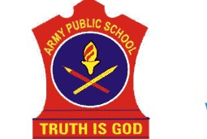

Welcome to Army Public School

ARMY PUBLIC SCHOOL SRINAGAR is, incontestably, a secular, co-educational day-cum- residential, Senior Secondary-cum-Primary School that was established /opened on 15 May 1981 with an enrollment of 147 students in classes I to VIII. Later on, with the fervent endeavors and grit of the school management, the school was upgraded to Class XII. With the sole purpose of providing phenomenal and holistic education, APS Srinagar has forged ahead with a mission to hone and integrate the all round personality of every student under its fold. Down the ages, our concept of education has undergone a general metamorphosis and the basic mint behind that is to attain the pinnacle of success at each and every step. Brick by brick, through the thick and thin of times; our goals, aims and aspirations, ideals, plus the colorful minds have painted the raw future of our pupils that lies before us, and with our team effort and dedication, we strive to make our students a tenfold more of what they think they could be and as a matter of evidence, our result itself speaks. We make strenuous efforts to come up to the expectations of those who trust us and hold us in high esteem.
There is an unparalleled knowledge base, a vibrant dynamism, an acute consciousness and the intrinsic values among our students which is the outcome of our hard slog and uphill struggle. Besides providing quality education, we organize a plethora of activities so that our students have the verve and vigor to face the multi-faceted future challenges henceforth too. Our school is the quintessence and an embodiment of discipline, politeness, valor, truthfulness and courtesy. To sum up, the school bristles with a committed leader, stanch faculty and above all, the masterminded and scholarly students who pursue and chase for excellence following the motto:
Truth is God
download section:
- class 1
- class 2
- class 3
- class 4
- class 5
- class 6
- class 7
- class 8
- class 9
- class 10
- Principal's office
- IT Department